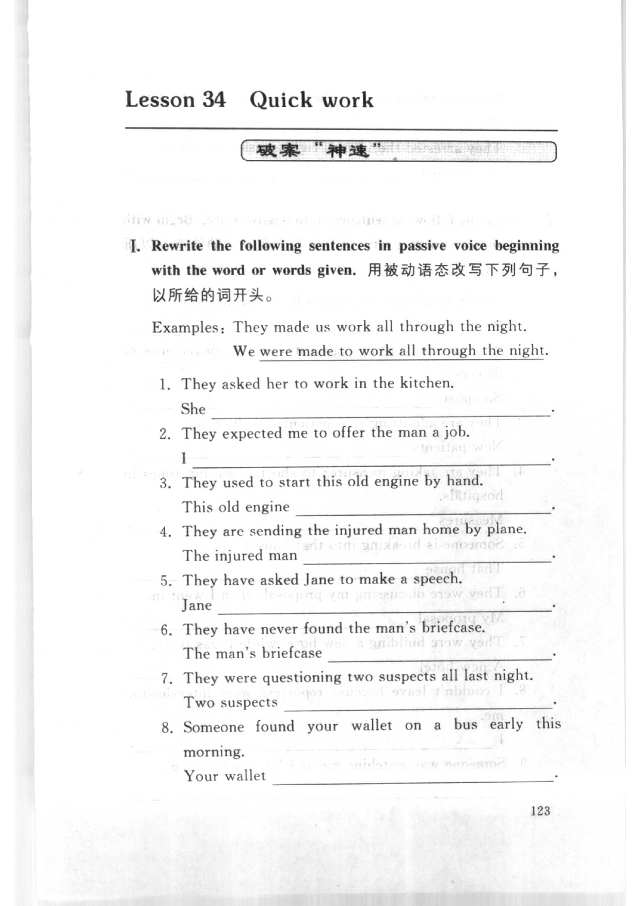
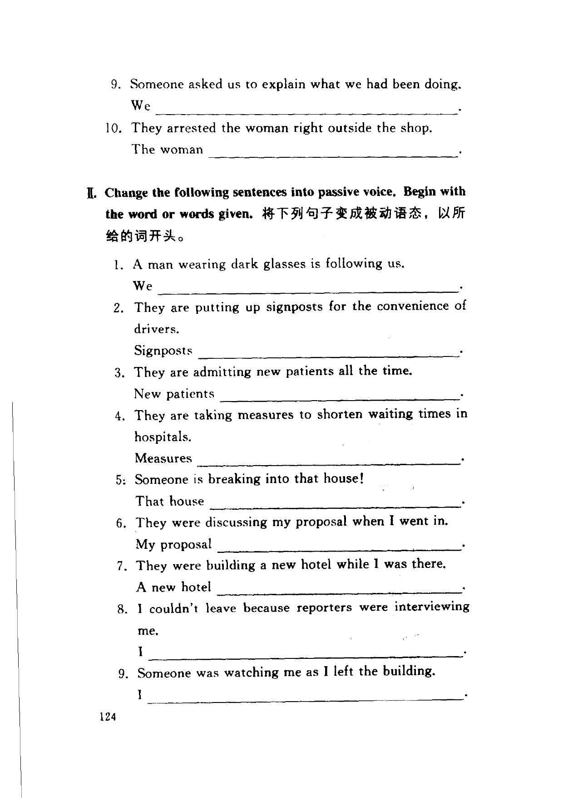
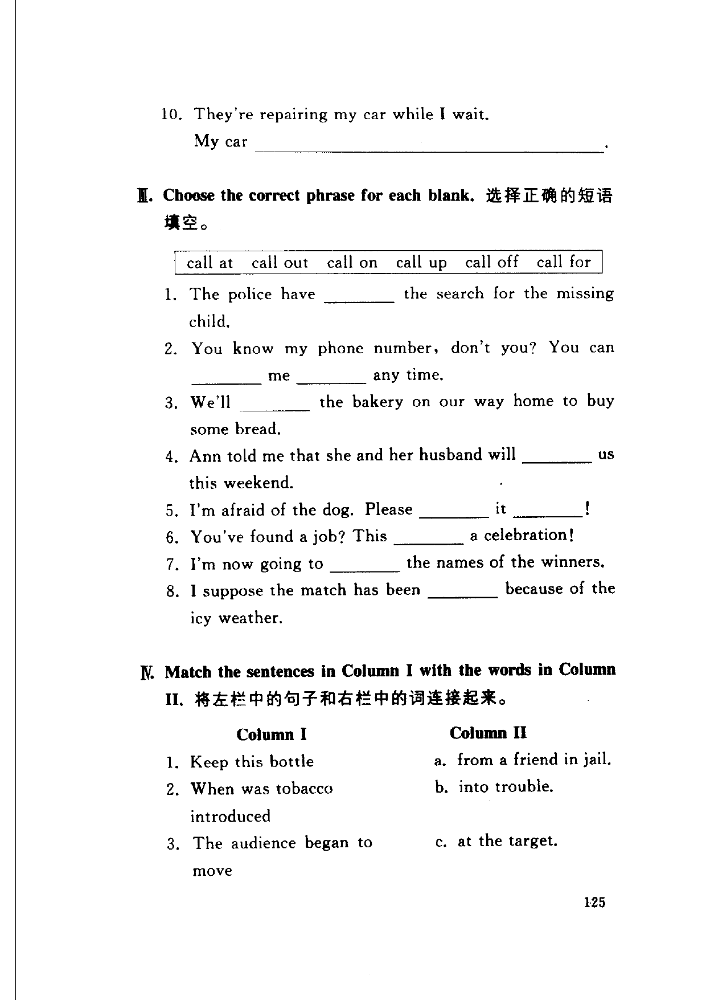
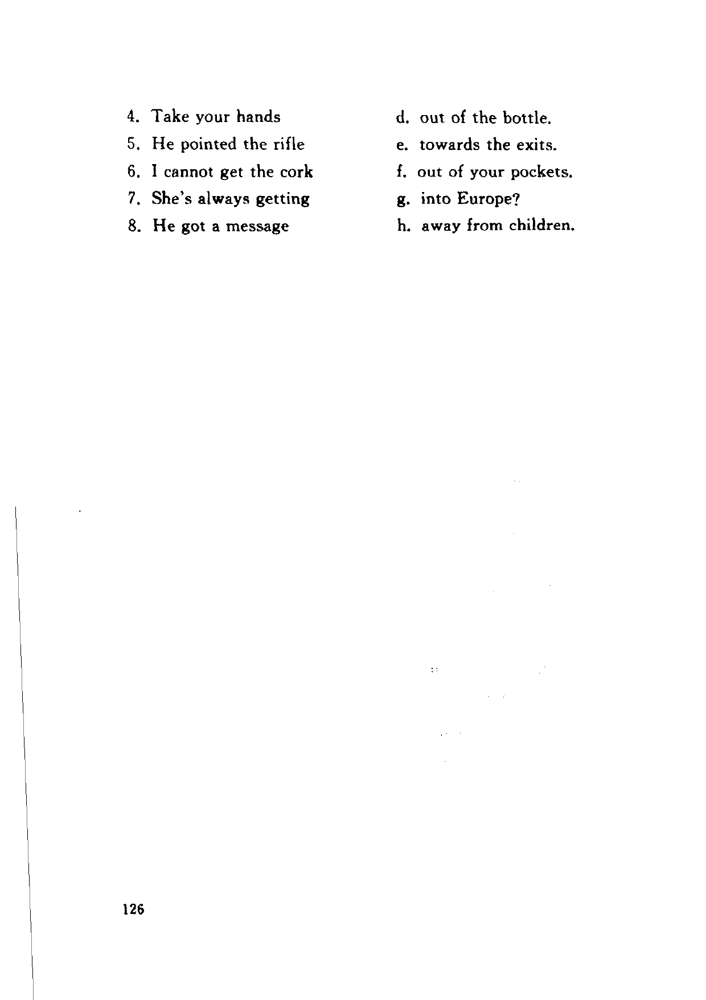

Grammar exercises · 语法练习
I. Rewrite the following sentences in passive voice beginning with the word or words given.
用被动语态改写下列句子，以所给的词开头。
Examples: They made us work all through the night.
We were made to work all through the night.
-
I. Passive voice — They asked her to work in the kitchen. She .
-
I. Passive voice — They expected me to offer the man a job. I .
-
I. Passive voice — They used to start this old engine by hand. This old engine .
-
I. Passive voice — They are sending the injured man home by plane. The injured man .
-
I. Passive voice — They have asked Jane to make a speech. Jane .
-
I. Passive voice — They have never found the man's briefcase. The man's briefcase .
-
I. Passive voice — They were questioning two suspects all last night. Two suspects .
-
I. Passive voice — Someone found your wallet on a bus early this morning. Your wallet .
-
I. Passive voice — Someone asked us to explain what we had been doing. We .
-
I. Passive voice — They arrested the woman right outside the shop. The woman .
II. Change the following sentences into passive voice. Begin with the word or words given.
将下列句子变成被动语态，以所给的词开头。
-
II. Passive voice — A man wearing dark glasses is following us. We .
-
II. Passive voice — They are putting up signposts for the convenience of drivers. Signposts .
-
II. Passive voice — They are admitting new patients all the time. New patients .
-
II. Passive voice — They are taking measures to shorten waiting times in hospitals. Measures .
-
II. Passive voice — Someone is breaking into that house! That house .
-
II. Passive voice — They were discussing my proposal when I went in. My proposal .
-
II. Passive voice — They were building a new hotel while I was there. A new hotel .
-
II. Passive voice — I couldn't leave because reporters were interviewing me. I .
-
II. Passive voice — Someone was watching me as I left the building. I .
-
II. Passive voice — They're repairing my car while I wait. My car .
III. Choose the correct phrase for each blank.
选择正确的短语填空。
call at call out call on call up call off call for
-
III. call phrases — The police have
1.the search for the missing child. -
III. call phrases — You know my phone number, don't you? You can
2.me3.any time. -
III. call phrases — We'll
4.the bakery on our way home to buy some bread. -
III. call phrases — Ann told me that she and her husband will
5.us this weekend. -
III. call phrases — I'm afraid of the dog. Please
6.it7.! -
III. call phrases — You've found a job? This
8.a celebration! -
III. call phrases — I'm now going to
9.the names of the winners. -
III. call phrases — I suppose the match has been
10.because of the icy weather.
IV. Match the sentences in Column I with the words in Column II.
将左栏中的句子和右栏中的词连接起来。
-
IV. Matching — Keep this bottle
-
IV. Matching — When was tobacco introduced
-
IV. Matching — The audience began to move
-
IV. Matching — Take your hands
-
IV. Matching — He pointed the rifle
-
IV. Matching — I cannot get the cork
-
IV. Matching — She's always getting
-
IV. Matching — He got a message
Column II options: a. from a friend in jail. b. into trouble. c. at the target. d. out of the bottle. e. towards the exits. f. out of your pockets. g. into Europe? h. away from children.
Original images · 原图对照
Expand a page to compare it with the transcription. Open the original in a new tab to zoom in.
展开原图核对文字，也可以在新标签页打开原图放大查看。
Book page 123 · Exercise I (passive voice, items 1–8)
Open original · 打开原图 ↗ Download original · 下载原图


Book page 124 · Exercise I (items 9–10) and Exercise II (passive voice, items 1–9)
Open original · 打开原图 ↗ Download original · 下载原图


Book page 125 · Exercise II (item 10), Exercise III (call phrases), and start of Exercise IV (matching)
Open original · 打开原图 ↗ Download original · 下载原图


Book page 126 · Exercise IV (matching, continued)
Open original · 打开原图 ↗ Download original · 下载原图


Your notes and answers
Use this space for longer responses or exercises that do not have an individual answer box.